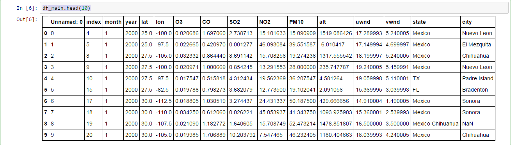
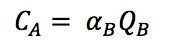
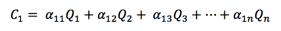
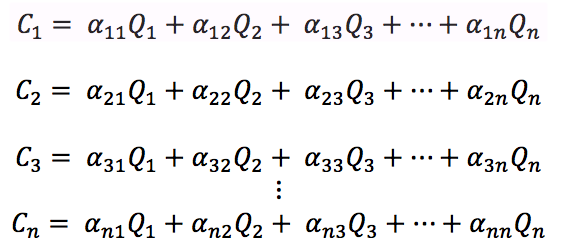

POLLDENTIFY
Objective
To create a super smart web app that traces the historical and current sources of pollution for a given geographical location using US wind and pollution data
Introduction
Air pollution has been a topic of debate and discussion ever since the 1990s. As people become more and more aware of their actions to the environment, they are also becoming more vigilante about the air that they breathe in. We often refer to weather reports for a better understanding of the air quality and the concentration of pollutants. For future research purposes, all these pollutant information are well-recorded in some databse in the US government along with other weather details in the past 20 years.
POLLDENTIFY aims to analyze these pollutant records from weather stations to generate new insights about the air around us. Through using the Gaussian Dispersion Model -- a model commonly used by national weather stations for weather forecasting and by other government agencies for decision making -- we analyzed 137 sample points in the United States to track the source of pollution on each sample point monthly for the past 15 years. We gathered and processed approximately one hundred thousand sample points in total.
The google map shows the location of the sample points. Next question is: Where would we get the data?
Web Crawling
From the algorithm developed, it occurs to our team that we would need data including concentration of pollutants, elevation of a sample point, direction and magnitude of wind in order to generate the coefficients required to calculate the emission of pollutants of every sample point. In order to obtain reliable data, we first looked into governmental databases. The governmental data sources that we decided to use include:
- EPA -- The Environmental Protection Agency produces extremely fine datapoints for all their pollutants. There are hourly, daily and yearly summaries of each pollutant. For Polldentify, we decided to limit our scope to only five pollutants -- Ozone, Sulphur Dioxide, Nitrogen Dioxide, Carbon Monoxide and PM10. The first four pollutants are the parameters used to measure the AQI of the US, and PM10 concentrations are generally a concern because it reduces visibility and can irritate the eyes and the respiratory system.
- NOAA -- The National Oceanic and Atmospheric Administration records direction and magnitude of wind every day and summarizes their data in a daily, monthly and yearly basis. We took the monthly wind direction for our calculations.
However, we realize that governmental data is not sufficient. First, the aforementioned agencies only update their databases once every six months, hence we would not be able to take the real time concentration of pollutant directly. Secondly, there is neither formal nor convenient record that relates latitude and longitude with elevation and state. Therefore, we used Google Elevation API and Google Geocoding API to obtain the elevation and state at each sampling latitude and longitude.
All web crawling code is written in Python (except for NOAA wind data, where we used MATLAB to open nc files and store it into csv). For EPA, we can send URL requests directly to the EPA, unzip and download their files, as for Google related services, we requested different API keys in order to obtain different services.
Organizing the Data
The data is especially hard to organize because the data set itself is extremely huge! We have more than 20,000 rows and 100,000 data points! However, by utilizing PySpark -- a Python-compatible big data processing platform -- and Pandas, we could organize our data elegantly. PySpark is built for the generic RDD (Resilient Distributed Dataset) processing, while a dataframe has in-built metadata (because it is in a table format) and one could query through the table easily. We successfully save all the aforementioned data first as their respective csv and then concatenate them to one major dataframe.

Developing the algorithm
When formulating our algorithm, we first go online to see what most government agencies use to predict the flow of pollution within a city. In our search, the most relevant equation is the Gaussian Dispersion Equation, which is as follow:

The concrete description of the variables could be found here. In short, the equation essentially shows a linear relationship between concentration of pollutants (C) and rate of emission of pollutants from source (Q).

Since the relationship is linear, we could impose the superposition principle and infer that the concentration at a city A can be expressed as a summation of rate of emission of pollutants from other cities, and the coefficients that is multiplied to the rate of emission can be determined by the geographical locations and wind data on a certain day, which would be:

Our algorithm builds upon the linearity between concentration of pollutants and rate of emission of pollutants and draws a matrix for each date that we have (in our case, since our data is monthly, we are also calculating a monthly average of sources of pollutants.
